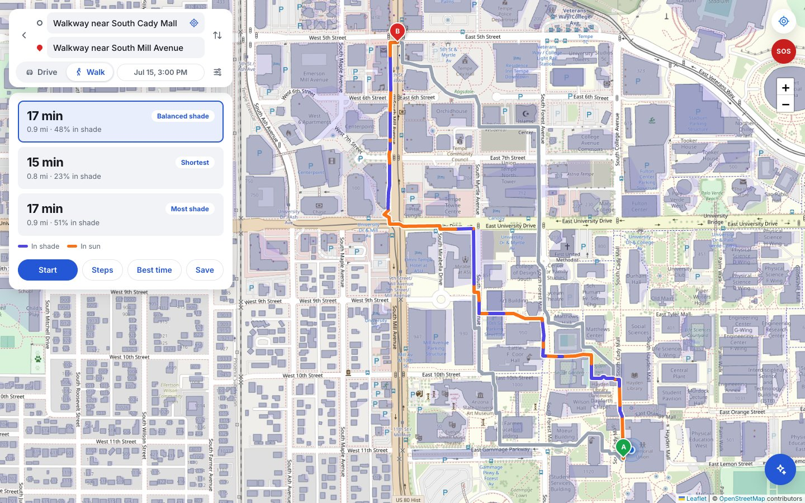
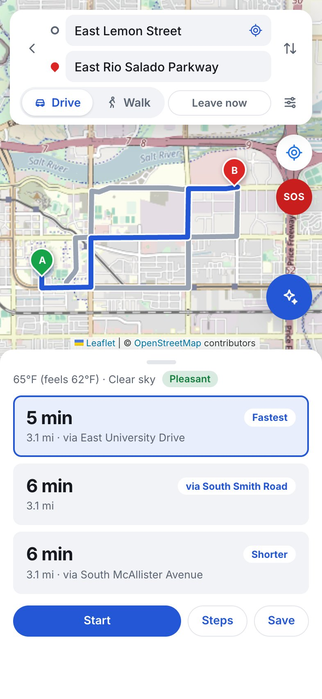

Hi, I'm Sreeja.
I turn messy text and messy operations data into tools that non-technical teams can actually use. Scroll down and I'll walk you through what I've built.
The pattern behind my projects
MS Data Science, Analytics & Engineering · Arizona State University · May 2027 · 4.0 GPA
I did my B.Tech in AI & Data Science in Hyderabad and finished as the Best Outgoing Student of the program. Now I'm at ASU for my master's.
Looking back at what I've built, there's a pattern: it usually starts with messy text or messy operations data. Job postings, customer complaints, delivery orders, fund mandates. What I enjoy most is the last step, where the model disappears behind something a non-technical team can actually use. At IIT Madras that was an email classifier for courier operations. At BDSR it's CustomNER, a tool where reviewing the model's predictions is what retrains it.
Umbra: fastest drives, shadiest walks
A C++20 routing engine and web app for Tempe, Arizona
Umbra is the project I'm spending most of my time on right now. It's built on real OpenStreetMap data and plans trips differently from a typical maps app. Drives account for live traffic, rain, and the sun sitting low in your eyes. Walks use the shadows of 15,000+ buildings plus live weather to keep you out of the Arizona sun, and routes to ASU buildings end at whichever entrance is quickest to reach.
I wrote the core algorithms myself, with no graph or geometry libraries: Dijkstra and A* on a hand-written indexed binary heap with decrease-key, multi-target search for building entrances, alternative routes with the penalty method, and Kosaraju's SCC to clean up the road graph.


Around the engine there's a C++ HTTP backend with SQLite and libsodium accounts, and an opt-in SOS feature that texts your location to an emergency contact after a cancellable 10-second countdown. Ask Umbra is an assistant that answers questions like "when is it coolest to walk to the MU today?" by calling the engine as tools, so it never makes up a route.
Selected work
Multi-agent LLMs, NLP pipelines, optimization and retrieval.
MandateIQ
Multi-agent LLM system for fund reviewA Proponent agent builds the case for approving a fund and a Challenger agent attacks it, for up to three rounds. Every claim has to cite an evidence ledger, and a hallucination firewall blocks claims that cite missing or misquoted evidence. 11 policy rules and a 6-factor Trust Score decide whether a case is finalized, reworked, or sent to a person.
CustomNER
BDSR Solutions · internal toolA Python and spaCy pipeline that pulls structured entities out of unstructured job postings, wrapped in a Flask human-in-the-loop app that combines annotation, active learning and iterative retraining. Entity F1 improved over 18 iterations while manual labeling dropped.
Delivery optimization
IIT Madras · 500K+ weekly ordersA dynamic delivery-assignment system using clustering and distance-based allocation, with SQL integration for reporting. Supervised by Prof. C. Rajendran and Dr. G. Viswanath (TCS). Presented at SOM 2024, IMT Ghaziabad.
Multi-document RAG
Question answering over several documentsHugging Face embeddings and FAISS for retrieval, with Gemini Pro (through LangChain) writing the final answer.
AI product cataloging
UdyamWell · ONDC networkObject detection plus description generation to automate product images in the onboarding flow. 40% less manual cataloging effort.
Roles so far
Industry internships, research, and teaching.
AI Engineer · Python Full Stack Intern, BDSR Solutions LLP
Designed and deployed CustomNER from scratch, then built the Flask human-in-the-loop app around it.
Information Systems Grader, Arizona State University
Grading graduate-level work in Python, information systems and analytics, with technical feedback students can act on.
ML Research Intern, IIT Madras
An NLP pipeline over 1,000+ customer-feedback records scraped from public sites, to find operational patterns in courier services. A two-level classifier that routes feedback into 6 departments, and a real-time email classification app for non-technical ops teams.
AI Developer Intern, UdyamWell (ONDC)
A computer-vision cataloging system integrated into ONDC product onboarding: 92% detection accuracy, 40% less manual cataloging.
Publications
Selected papers. The full, up-to-date list is on Google Scholar.
- GenAI-Driven Intelligent Email Ticketing: An End-to-End Architecture for Automated Sentiment-Aware Customer Support
ICACECS 2025, Smart Innovation, Systems and Technologies vol. 488, Springer. DOI - Optimizing Delivery Operations in Dynamic Urban Environments: A Comprehensive Model
Sustainable Paradigms in Operations and Supply Chain Management. Presented at SOM 2024, IMT Ghaziabad.
What I work with
Languages
AI / ML
Backend & cloud
Data
Education & courses
- Arizona State University: MS in Data Science, Analytics and Engineering (Computing and Decision Analytics), GPA 4.0/4.0, May 2027
- CMR College of Engineering and Technology: B.Tech in AI & Data Science (GPA 9.16/10) with a minor in Computer Science Engineering, Cyber Security (9.5/10), May 2025. Best Outgoing Student and one of the first-year academic toppers
- Generative AI with DeepLearning.AI and AWS (Coursera, 2024)
- AI Agents course by Hugging Face (2025)
Everything on one page
A one-page PDF you can view here or download.
Let's build something useful
If something here fits a role you're hiring for, I'd love to hear from you.